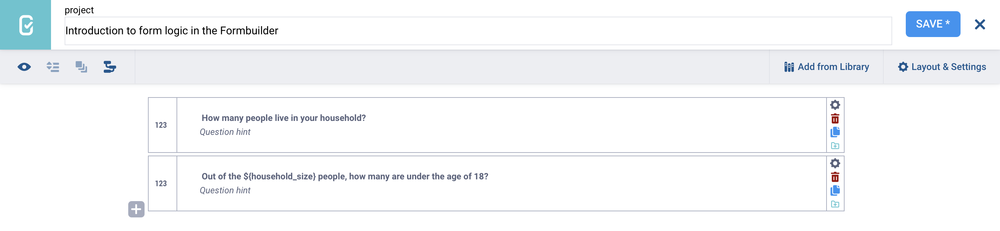
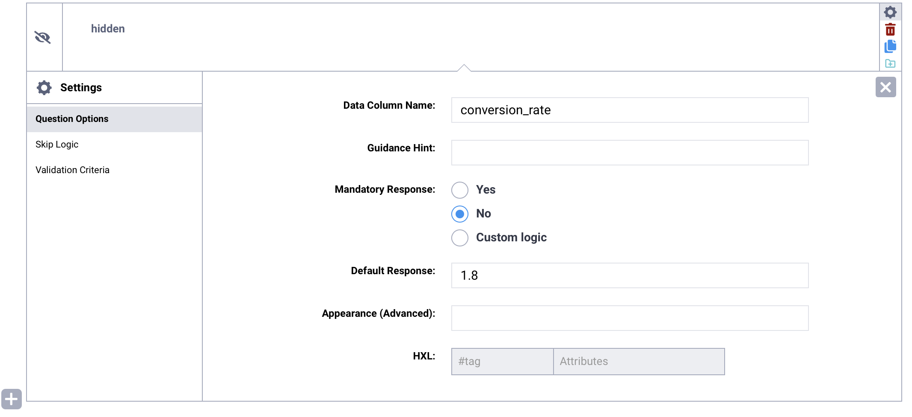
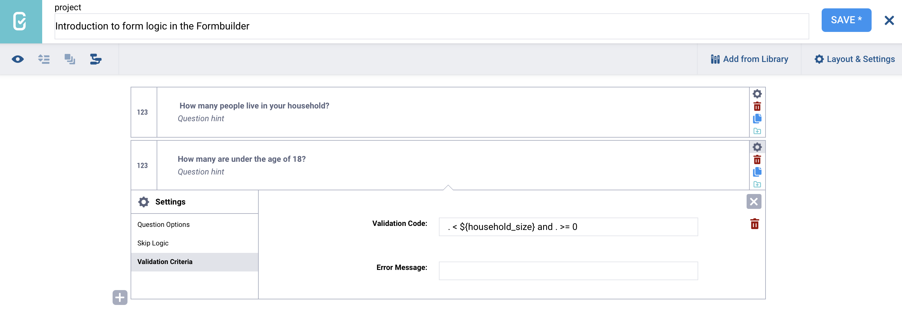

Busca en nuestra documentación, explora nuestros recursos y visita nuestro Foro de la Comunidad para obtener información más detallada
Última actualización: 21 mar 2026
La lógica de formularios controla el flujo y el comportamiento de tu formulario en función de las respuestas a preguntas anteriores. Te permite crear formularios dinámicos que se adaptan a la información ingresada por el usuario. Por ejemplo, puedes usar la lógica de formularios para mostrar preguntas específicas solo cuando sean relevantes, validar respuestas o realizar cálculos automáticamente.
Los principales tipos de lógica de formularios incluyen:
Lógica de omisión: Controla cuándo se muestran u ocultan las preguntas en función de respuestas anteriores.
Criterios de validación: Validan las respuestas para asegurarse de que cumplan con reglas o criterios definidos.
Selecciones en cascada: Muestran solo las opciones de respuesta relevantes en función de respuestas anteriores.
Cálculos: Generan valores automáticamente mediante expresiones matemáticas o lógicas.
Lógica de respuesta obligatoria: Define cuándo una pregunta debe ser respondida.
Para obtener más información sobre cada tipo de lógica de formularios, consulta los artículos de ayuda sobre lógica de omisión, criterios de validación, selecciones en cascada, lógica de respuesta obligatoria y cálculos en KoboToolbox.
Este artículo presenta los conceptos clave de la lógica de formularios en el Formbuilder, incluidos el referenciado de preguntas, las constantes, los operadores, las funciones y las expresiones regulares, y explica cómo usarlos para crear formularios dinámicos y adaptables.
El KoboToolbox Formbuilder incluye herramientas integradas para agregar lógica de formularios, como lógica de omisión y criterios de validación. Estas herramientas son adecuadas para la mayoría de los casos de uso estándar, pero pueden ser limitadas cuando se trabaja con condiciones más complejas.
Para la lógica de omisión y la validación, puedes usar los editores visuales del Formbuilder o ingresar manualmente expresiones XLSForm. Para esta segunda opción, es útil comprender los conceptos básicos de la sintaxis XLSForm, incluidos el referenciado de preguntas, las constantes, los operadores matemáticos y de comparación, los operadores lógicos para combinar condiciones, las funciones y las expresiones regulares.
Para obtener más información sobre la lógica de formularios en XLSForm, consulta Introducción a la lógica de formularios en XLSForm.
Si tu formulario requiere una lógica compleja o altamente personalizada, se recomienda descargar el formulario como XLSForm y realizar las ediciones necesarias directamente en el archivo de Excel.
El referenciado de preguntas te permite incorporar la respuesta a una pregunta anterior en la etiqueta o la lógica de una pregunta posterior. El referenciado de preguntas se usa con frecuencia en formularios avanzados:
En etiquetas o sugerencias de preguntas: Por ejemplo, puedes incluir el nombre del hijo de un encuestado en preguntas posteriores sobre ese hijo.
En la lógica de formularios: Por ejemplo, puedes mostrar u ocultar una pregunta en función de una respuesta anterior, o validar una respuesta comparándola con una anterior.
El referenciado de preguntas usa el formato ${data_column_name}. El nombre de columna de datos de una pregunta se puede encontrar y modificar en la configuración de la pregunta.
Para mostrar una respuesta anterior dentro de la etiqueta de otra pregunta, inserta ${data_column_name} directamente en la etiqueta de la pregunta donde quieres que aparezca el valor.

Si una referencia de pregunta contiene un error ortográfico o es incorrecta, aparecerá un mensaje de error al previsualizar o enviar el formulario.
Nota: Al referenciar una pregunta dentro de su propia lógica (por ejemplo, para criterios de validación), se puede usar un punto . como atajo.
Una constante es un valor fijo que no cambia durante la recolección de datos. Las constantes son útiles cuando necesitas usar el mismo valor varias veces en cálculos, como una tasa de conversión fija, un umbral o un multiplicador.
En el Formbuilder, puedes almacenar una constante usando el tipo de pregunta Oculto. Una pregunta Oculta no aparece en el formulario y no tiene un elemento de interfaz de usuario. En cambio, almacena un valor en segundo plano al que se puede hacer referencia en preguntas de Cálculo más adelante en el formulario.
Para almacenar una constante en tu formulario:
Agrega una nueva pregunta a tu formulario.
Selecciona el tipo de pregunta Oculto.
Abre la Configuración de la pregunta.
En el campo Respuesta predeterminada, ingresa el valor de la constante.

El valor ingresado en el campo Respuesta predeterminada se almacenará como la constante. Luego puedes hacer referencia a este valor usando el nombre de columna de datos de la pregunta Oculta en los cálculos y la lógica de tu formulario.
Los operadores matemáticos se usan para realizar cálculos aritméticos con valores numéricos en el formulario. Los operadores matemáticos en la lógica de formularios incluyen:
Operador |
Descripción |
|---|---|
|
Suma |
|
Resta |
|
Multiplicación |
|
División |
|
Módulo (resto de una división) |
Los operadores de comparación se usan para comparar valores. Los operadores de comparación en la lógica de formularios incluyen:
Operador |
Descripción |
|---|---|
|
Igual a |
|
Mayor que |
|
Menor que |
|
Mayor o igual que |
|
Menor o igual que |
|
Distinto de |
Los operadores lógicos se pueden usar en la lógica de formularios para combinar múltiples condiciones. Los operadores lógicos incluyen:
and (todas las condiciones deben cumplirse)
or (al menos una de las condiciones debe cumplirse)
not (las condiciones no deben cumplirse)

Las funciones son operaciones predefinidas que se usan para realizar cálculos o manipular datos en la lógica de formularios. Las funciones hacen que los cálculos y la lógica de formularios sean más eficientes al realizar automáticamente tareas complejas, como redondear valores, calcular potencias o extraer la fecha actual.
Para obtener una lista completa de las funciones que puedes usar en la lógica de formularios, consulta Usar funciones en XLSForm.
Una expresión regular (regex) es un patrón de búsqueda que se usa para encontrar caracteres específicos dentro de una cadena de texto. Se usa ampliamente para validar, buscar, extraer y restringir texto en la mayoría de los lenguajes de programación, incluido KoboToolbox.
Las expresiones regulares se pueden usar en criterios de validación para controlar la longitud y los caracteres ingresados en una pregunta (por ejemplo, limitar la entrada de números de teléfono a exactamente 10 dígitos, controlar el formato de números de identificación o verificar que una dirección de correo electrónico sea válida). También se pueden usar en cálculos y otra lógica de formularios.
En KoboToolbox, las expresiones regulares se evalúan usando la función regex(., ' '), donde la expresión regular se ingresa entre apóstrofos y el punto . representa la pregunta actual. regex(., ' ') devuelve TRUE si se cumple la expresión regular, y FALSE en caso contrario.
Para obtener más información sobre el uso de expresiones regulares en KoboToolbox, consulta Usar expresiones regulares en XLSForm.
¿Encontraste lo que buscabas? ¿Te ha parecido clara la traducción? ¿Faltaba algo?
¡Comparte tus comentarios para ayudarnos a mejorar este artículo!
KoboToolbox es mantenido por Kobo Inc.